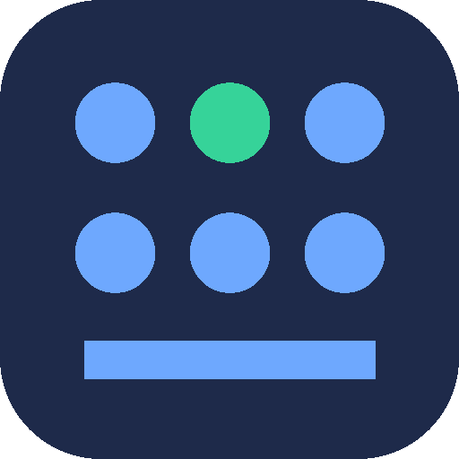

lifelongeek agent team · 시행일 2026-11-22
이 약관은 개인이 만들어 개인 컴퓨터에서 운영하는 애플리케이션 lifelongeek agent team(이하 "이 앱")의 이용 조건을 정합니다. 이 앱을 사용하면 이 약관과 개인정보처리방침에 동의한 것으로 봅니다.
여섯 개의 에이전트가 각자의 대화방에서 할 일 관리, 기록 정리, 자료 요약, 메일·일정 보조를 처리합니다. Google 계정을 연결하면 다음 범위까지 처리합니다.
에이전트의 답변은 대규모 언어 모델이 만든 것이라 사실과 다를 수 있습니다. 특히 다음 내용은 참고 자료일 뿐이며 전문가의 판단을 대신하지 않습니다.
저장된 메일 초안과 등록된 일정은 반영 전에 이용자가 직접 확인해야 합니다.
이 앱은 개인이 만든 비영리 도구로, 어떠한 보증도 없이 있는 그대로 제공됩니다. 운영자는 가동 시간이나 자료 보존을 보장하지 않으며, 이 앱의 사용 또는 사용 불능으로 생긴 손해에 대해 법이 허용하는 범위에서 책임을 지지 않습니다.
약관이 바뀌면 이 페이지를 고치고 시행일을 갱신합니다. 이 약관은 대한민국 법률에 따릅니다.
문의: ken.geonmin.kim@gmail.com
These terms govern lifelongeek agent team, a personal application built and operated by an individual on their own computer. Using the app means accepting these terms and the Privacy Policy.
The app is not a public service. It has no sign-up and is used by the operator alone. Access is possible only from devices inside the operator's private network. There is no fee.
Six assistants handle task management, record keeping, document summaries and mail or calendar help in their own chat rooms. With a connected Google account the app finds, reads and summarizes messages; saves replies as drafts only, leaving sending to the user in Gmail; and reads the calendar, creating or rescheduling events only when the user asks. Sending mail and deleting calendar events are not implemented.
The user is responsible for the credentials of the connected Google account and for the computer the app runs on, for keeping the content processed through the app compliant with applicable law and with Google's terms, and for not using the app to connect someone else's account or reach data they are not authorized to access.
Answers are produced by a large language model and may be inaccurate. Financial or investment summaries are not investment advice or solicitation, and health record summaries are not a medical diagnosis or prescription; both are reference material and do not replace professional judgment. The user should review saved mail drafts and created events before relying on them.
The app is a non-commercial tool made by an individual and is provided as is, without warranty of any kind. The operator does not guarantee uptime or data retention and, to the extent permitted by law, is not liable for damages arising from use of or inability to use the app.
The user may disconnect the Google account at any time from the settings screen, or revoke access at Google Account → Third-party access. The operator may discontinue the app without prior notice.
If these terms change, this page is updated along with the effective date. These terms are governed by the laws of the Republic of Korea. Contact: ken.geonmin.kim@gmail.com